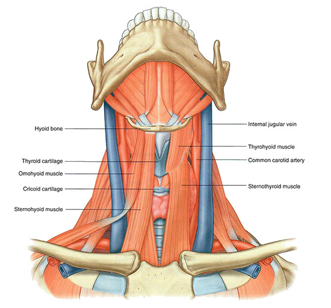

Anterior Triangle of the Neck: Module 1 - Page 3 of 4
×
Rotate for a view of the submandibular area.

🔍 Neck muscles
Superficial neck muscles
Add the geniohyoid.
Add the mylohyoid.
Add the anterior and posterior bellies of the digastric muscle.
Add the stylohyoid.
This muscle connects the hyoid to the styloid bone of the skull. Rotate the cadver to see this attachment.
Add the sternothyroid.
Add the thyrohyoid.
Add the sternohyoid.
Add the inferior and superior bellies of the omohyoid.
The word "omos" means shoulder in Greek. Therefore the omo-hyoid connects the shoulder with the hyoid bone.
Add the external jugular veins.
Add the anterior jugular veins and arch.
Demonstrate your knowledge!
Notice that the sternohyoid, the anterior jugular veins and the arch leave a clear bloodless approach to the cricoid cartilage and the thyroid cartilage.
Demonstrate this by using the Dissect tool to dissect away the sternohyoid muscle.
Clinically this is significant when placing a tracheostomy.